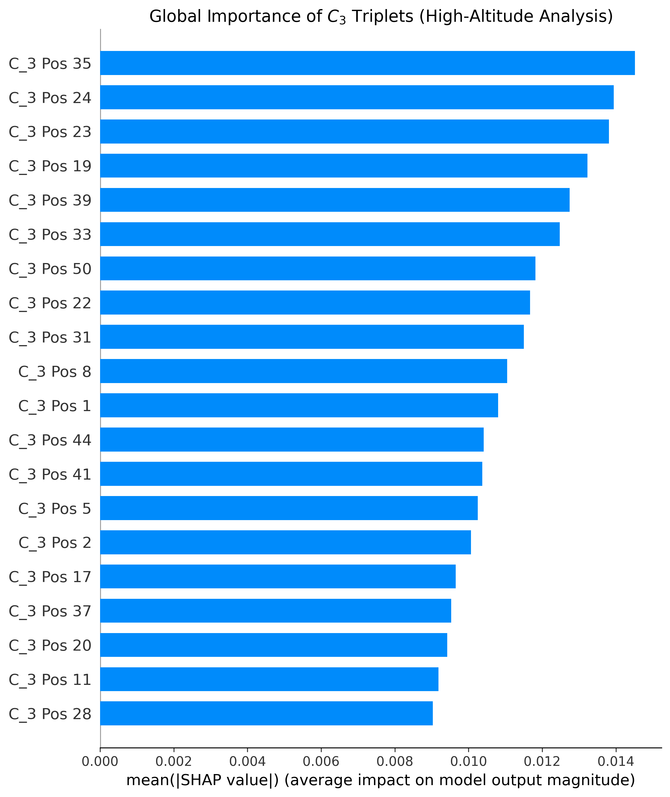
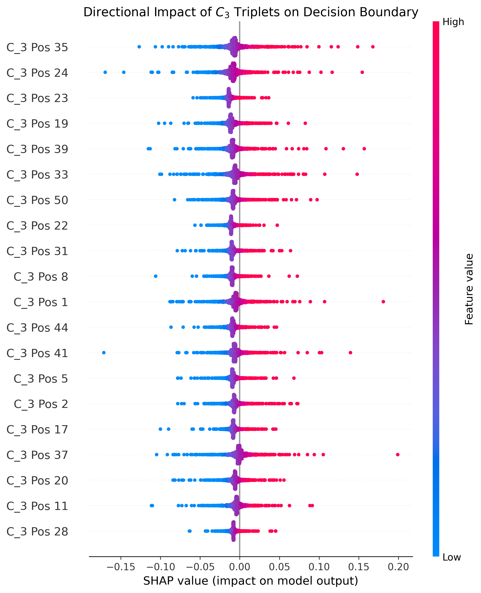

1. The Doubt: Was the AI cheating? 1. Le Doute : L'IA trichait-elle ?
In the 1970s, it was discovered that the spacing between prime numbers (via the Riemann Zeta zeros) perfectly mimics the energy levels of complex atoms (Quantum Chaos, simulated by GUE matrices). In my V1 project, an AI managed to tell them apart with 97% accuracy.
But a massive scientific doubt remained: The Unfolding Bias.
To compare these two worlds, mathematicians use an "Unfolding" formula to normalize the data. However, for the very first zeros of the Riemann function (the ones used in V1), this formula is only an approximation. It leaves a microscopic shadow, a computational residue.
The big question was therefore to know whether the AI actually discovered a fundamental difference between quantum physics and prime numbers, or if it merely spotted this approximation error?
Dans les années 1970, on a découvert que l'espacement entre les nombres premiers (via les zéros de Riemann) imitait parfaitement les niveaux d'énergie des atomes complexes (Chaos quantique, simulé par les matrices GUE). Dans mon projet V1, une IA a réussi à les différencier avec 97% de précision.
Mais un doute scientifique subsistait : Le biais de l'Unfolding.
Pour comparer ces deux mondes, on utilise une formule de l'Unfolding pour normaliser les données. Cependant, pour les tout premiers zéros de la fonction de Riemann (ceux utilisés en V1), cette formule n'est qu'une approximation. Elle laisse une ombre microscopique, un résidu de calcul.
La grande question était donc de savoir si l'IA a-t-elle réellement découvert une différence fondamentale entre la physique quantique et les nombres premiers, ou s'est-elle contentée de repérer cette erreur d'approximation ?
2. The V2 Protocol: Extreme Altitudes and 3-Body Dynamics 2. Le Protocole V2 : Haute altitude et dynamiques à 3 corps
To ensure the AI couldn't cheat, we had to make the data perfectly pure. We changed two critical rules in this second version:
- 1. Climbing to Extreme Altitudes (OOD Testing): We stopped using the first zeros. Instead, we used Andrew Odlyzko's zeros6 tables, which contain zeros located around $T \approx 10^{20}$ (the 100 quintillionth zero). At this height, the Unfolding formula is nearly perfect. The calculation shadow disappears.
- 2. From Pairs to Triplets ($C_3$ correlations): Looking at just two adjacent numbers wasn't enough. We forced the AI to analyze 3-body correlations ($C_3$). Simply put, instead of just measuring the distance between two consecutive zeros (gap A to B = gap 1), the AI now analyzes the "rhythm" of three successive gaps (A-B, B-C, C-D).
Pour empêcher l'IA de tricher, il fallait rendre les données absolument pures. Nous avons modifié deux règles fondamentales dans cette seconde version :
- 1. Monter à des altitudes extrêmes (Test OOD) : Nous avons arrêté d'utiliser les premiers zéros. À la place, nous avons utilisé les tables zeros6 d'Andrew Odlyzko, qui contiennent des zéros situés autour de $T \approx 10^{20}$ (le cent trillionième zéro). À cette hauteur, la formule de l'Unfolding est quasi-parfaite. L'ombre de calcul disparaît.
- 2. Passer des paires aux triplets (Corrélations $C_3$) : Regarder seulement deux nombres adjacents ne suffisait plus. Nous avons forcé l'IA à analyser les corrélations à 3 corps ($C_3$). En clair, En clair, au lieu de regarder seulement la distance entre deux zéros consécutifs (écart entre A et B), l'IA analyse désormais le "rythme" de trois écarts successifs (A-B, B-C, C-D).
3. Results & Opening the Black Box 3. Résultats & Ouverture de la boîte noire
We trained a robust Neural Network on this new, ultra-pure dataset directly on Google Colab. Leveraging Cloud GPU power was essential to generate and diagonalize thousands of high-dimensional GUE matrices ($N=1000$), a task that would be computationally prohibitive on standard hardware. The result: a robust AUC-ROC score of 0.9383.
Feel free to test the code on Google Colab, here is the link.
To understand how it did this, we used SHAP (Explainable AI) to visualize the model's brain. We asked it: based on a sequence of 50 rhythms, where do you look to make your decision?
Nous avons entraîné un Réseau de Neurones robuste sur ces nouvelles données ultra-pures directement sur Google Colab. L'utilisation de la puissance de calcul d'un GPU Cloud a été cruciale pour générer et diagonaliser massivement des milliers de matrices GUE de grande dimension ($N=1000$), une tâche qui serait prohibitive sur un matériel standard. Le résultat : un score AUC-ROC de 0.9383.
N'hésitez pas à tester le code sur Google Colab, voici le lien.
Pour comprendre comment elle a fait, nous avons utilisé SHAP (Une IA Explicable) pour visualiser le cerveau du modèle. Nous lui avons demandé, à partir d'une séquence de 50 rythmes, où regarde-t-elle pour prendre sa décision ?


The "Resonance" Discovery: The graphs show that the AI doesn't just look for a generic difference. It anchors its decision on the cross-correlation between specific distant points (like a gap of 11 steps between position 35 and 24). It discovered that Riemann zeros possess a subtle, non-linear "resonance" at medium ranges—a hidden harmony that pure quantum chaos simply does not have.
La découverte de "Résonance" : Les graphiques montrent que l'IA ne cherche pas une différence globale. Elle ancre sa décision sur l'écartement entre des points précis (comme un saut de 11 crans entre la position 35 et 24). Elle a découvert que les zéros de Riemann possèdent une subtile "résonance" non-linéaire à moyenne portée. Une harmonie cachée que le pur chaos quantique ne possède pas.
4. Conclusion 4. Conclusion
This project is an empirical (statistical) observation, not a mathematical proof. However, it strongly suggests that the famous Wigner-Dyson universality (the idea that prime numbers and quantum physics are identical) begins to break down when we study 3-body correlations more closely.
By pointing exactly to where these anomalies occur in the sequences, Machine Learning could act as a true compass for theoretical mathematicians, guiding them toward equations that might have gone unnoticed.
Ce projet est une observation empirique (statistique), et non une preuve mathématique. Cependant, il suggère fortement que la célèbre universalité de Wigner-Dyson (l'idée que les nombres premiers et la physique quantique sont identiques) commence à se briser lorsqu'on étudie de plus près les corrélations à 3 corps.
En pointant exactement où ces anomalies se produisent dans les séquences, le Machine Learning pourrait agir comme une véritable boussole pour les mathématiciens théoriciens, les guidant vers des équations qui auraient pu passer inaperçues.
References & Technical Foundations Références & Fondations Techniques
- Odlyzko, A. M. (1987). On the distribution of spacings between zeros of the zeta function. Mathematics of Computation. (High-Altitude Dataset Tables)
- Montgomery, H. L. (1973). The pair correlation of zeros of the zeta function. Analytic number theory, 181-193.
- Derbyshire, J. (2004). Prime Obsession: Bernhard Riemann and the Greatest Unsolved Problem in Mathematics.
- Wikipedia: Riemann Zeta Function. Comprehensive mathematical overview.
- Deep Learning Specialization (Coursera). Technical foundation provided by Andrew Ng (DeepLearning.AI). (Course Link)
- Odlyzko, A. M. (1987). On the distribution of spacings between zeros of the zeta function. Mathematics of Computation. (Tables des zéros à haute altitude)
- Montgomery, H. L. (1973). The pair correlation of zeros of the zeta function. Analytic number theory, 181-193.
- Derbyshire, J. (2004). Dans la jungle des nombres premiers. (Prime Obsession).
- Wikipédia : Fonction zêta de Riemann. Vue d'ensemble fondamentale.
- Deep Learning Specialization (Coursera). Formation technique suivie auprès de Andrew Ng (DeepLearning.AI). (Lien du cours)